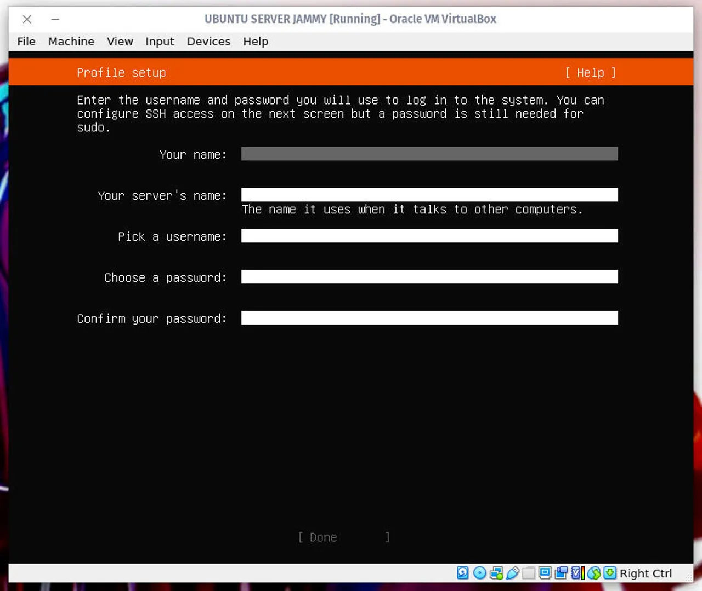
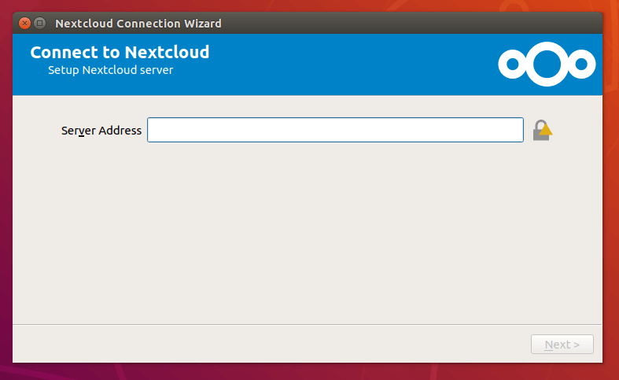
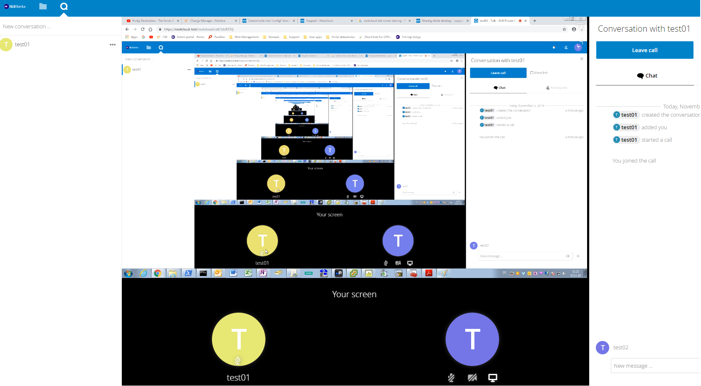

How I Built It
1. Setting Up the Server
I started by setting up a server to host Nextcloud. Here’s how I did it:
- I installed Ubuntu Server on a dedicated machine.
- I configured the server with a static IP address.
- I installed Docker to simplify the deployment of Nextcloud.

Ubuntu Server Setup
2. Deploying Nextcloud
Next, I deployed Nextcloud using Docker. Here’s my process:
- I pulled the Nextcloud Docker image
- I created a Docker container for Nextcloud by running: docker run -d -p 8080:80 nextcloud
- I accessed the Nextcloud setup wizard via my browser and completed the installation.

Nextcloud Setup Wizard
3. Configuring File Sharing and Calendars
Once Nextcloud was up and running, I configured file sharing and calendar sync:
- I created user accounts for myself and my family.
- I set up shared folders for collaborative projects.
- I integrated Nextcloud Calendar with my devices using CalDAV.
4. Adding Collaboration Tools
To make the cloud more versatile, I added collaboration tools:
- I installed Nextcloud Talk for video calls and chat.
- I integrated Nextcloud Deck for task management.
- I tested the tools to ensure they worked seamlessly.

Nextcloud Talk